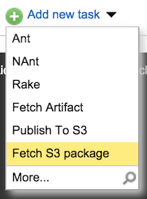
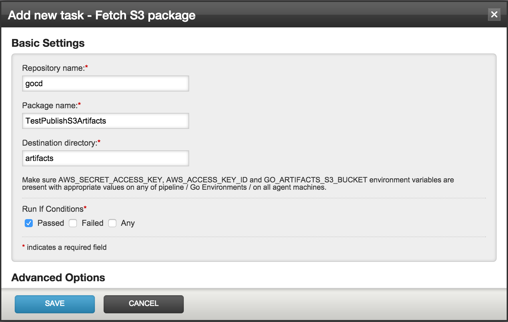

Fetch
Fetch from S3 is a task plugin, that, well, fetches artifacts from S3.

In the Add new task - Fetch S3 package modal, we need to specify the Repository name and Package name. The plugin will fetch the appropriate artifacts for the current run of the pipeline by using the information from the material plugin.
The Destination directory for artifacts needs to be specified as well. An example configuration for the fetch plugin is shown in the following screenshot:

Click Save to add the task to the job.